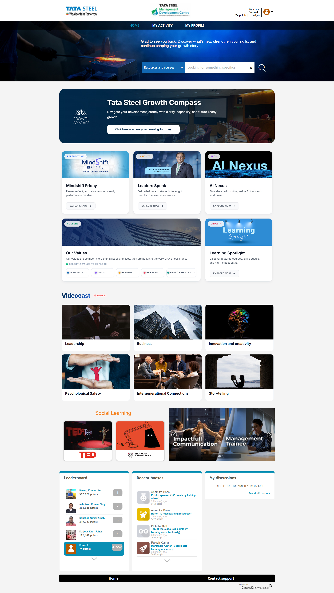
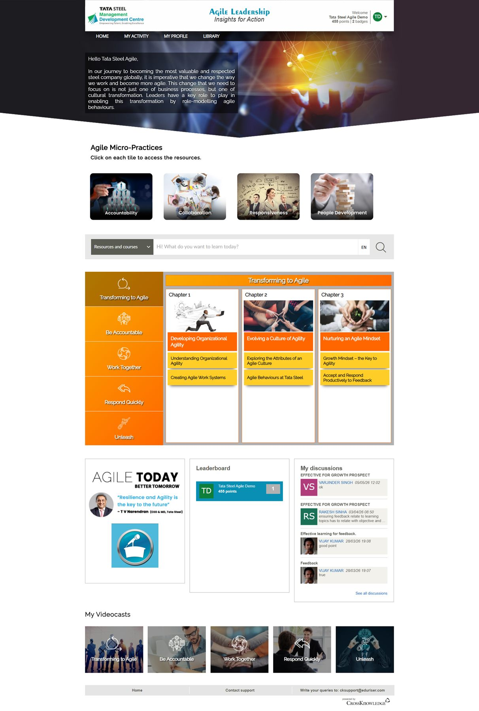

Overview
A visual redesign focused on making the learning portal more modern, structured, and easier to scan.
Tata Steel
A modern and structured learning portal experience designed for employees and leaders.

Before / After

Overview
A visual redesign focused on making the learning portal more modern, structured, and easier to scan.
Challenge
The previous portal felt dense and outdated, with heavy content blocks, inconsistent spacing, and limited hierarchy.
What Changed
Outcome